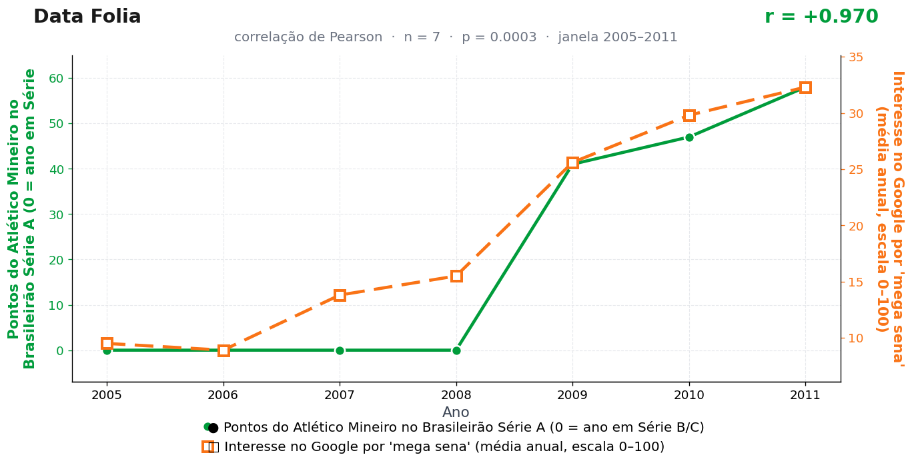

Post de 21/09/2026
A teoria
O atleticano conhece a controle da ansiedade. Ele entende que uma chance pequena não é uma chance morta; é apenas uma chance que exige paciência, voz rouca e jogo de cintura emocional.
Em temporadas de maior pontuação, essa escola se espalha. O país interpreta a campanha do Galo como sinal de que probabilidades apertadas merecem ser revisitadas, e a Mega-Sena vira o formulário natural dessa revisão.
O futebol mineiro entrega o treinamento; a loteria recebe os alunos. Cada ponto fortalece a ideia de que o acaso responde melhor quando alguém insiste com método.
O bolão da redação segue rigorosamente independente da tabela do Brasileirão, por recomendação expressa do nosso estatístico — que, ainda assim, confere a pontuação do Galo antes de escolher as dezenas. Ninguém é de ferro.
A teoria é ficção; a correlação é real: r = 0,97 (n = 7, p < 0,001).
Os dados por trás

- Pontos do Atlético Mineiro no Brasileirão Série A (0 = ano em Série B/C) — 7 pontos anuais, período 2005–2011. Fonte: CBF / Wikipedia — Campeonato Brasileiro Série A.
- Interesse no Google por 'mega sena' (média anual, escala 0–100) — 7 pontos anuais, período 2005–2011. Fonte: Google Trends (pytrends).
Como as correlações deste site são encontradas — e por que você não deve confiar nelas — está explicado na nossa metodologia.
Por que isso acontece?
A série do Atlético nesta janela é um degrau: quatro zeros seguidos (2005–2008, anos fora da Série A) e depois 41, 47, 58. A série da Mega-Sena no Google é uma rampa: sobe de 9,5 para 32,3 conforme a internet brasileira se massifica. Um degrau contra uma rampa que sobem juntos no tempo rendem r = 0,97 por pura geometria — o Pearson não sabe a diferença entre causa e formato.
Os zeros, mais uma vez, são codificação editorial: transformar "jogou a Série B" em "0 ponto" cria metade da variância da série. Sem essa decisão nossa, a correlação seria outra — o que mostra como escolhas silenciosas de tratamento de dados fabricam resultados.
E note: "mega sena" também estrela outro post deste arquivo, contra o Corinthians. Quando a mesma série explica dois clubes rivais em períodos diferentes, a explicação não está nos clubes — está no garimpo. É o nosso método, exposto com orgulho na metodologia.
Post de 21/09/2026 · publicado também no Instagram @datafolia.